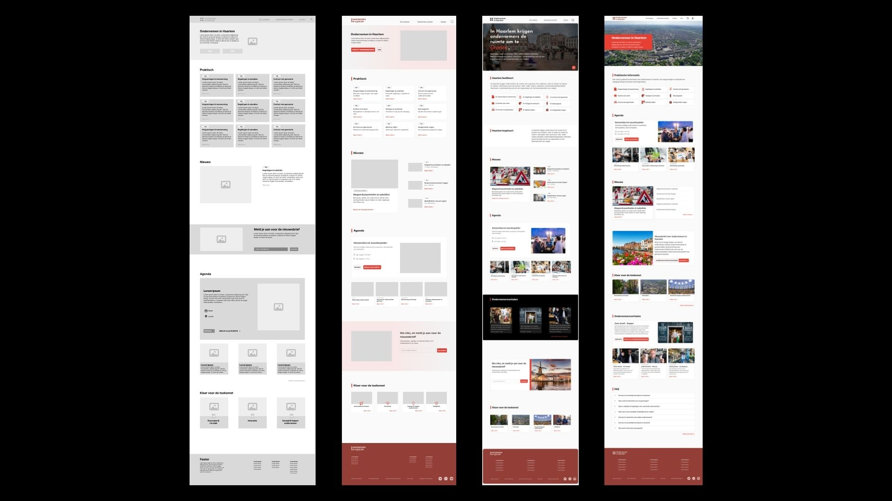

In opdracht van Haarlem Marketing ontwierp ik een platform dat ondernemers in Haarlem toegang geeft tot relevante informatie over ondernemen in de stad. Denk aan vergunningen, subsidies, netwerkevenementen en beleid.
Hiervoor ben ik het volledige ontwerpproces doorlopen: van lofi schetsen en wireframes tot meerdere iteraties van werkende prototypes.
De website is momenteel in aanbouw, waarbij mijn prototypes als basis worden gebruikt.
